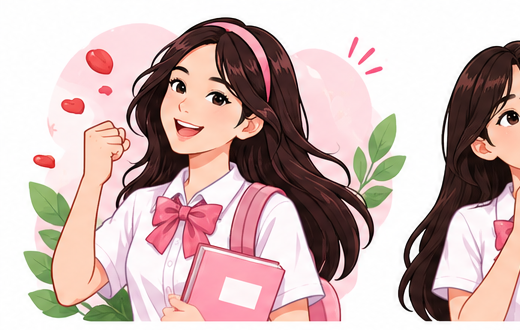
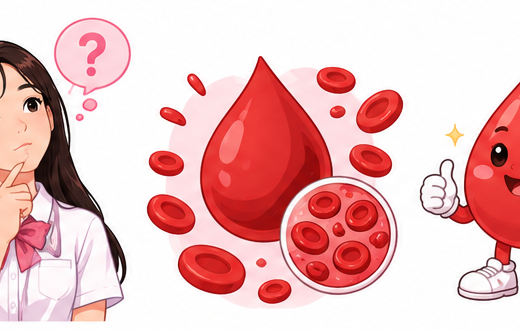

Pilih makanan kaya zat besi
Konsumsi sumber zat besi seperti daging, ikan, ayam, telur, kacang-kacangan, dan sayuran hijau.
Anemia bisa membuat tubuh cepat lelah dan sulit fokus. Yuk, kenali tubuhmu dan mulai kebiasaan sederhana untuk menjaga kesehatan sejak sekarang.

Memahami dasar-dasarnya membantu kita mengambil keputusan yang lebih tepat untuk kesehatan.

Anemia adalah kondisi ketika kadar hemoglobin (Hb) dalam darah lebih rendah dari batas normal sesuai usia, jenis kelamin, dan kondisi fisiologis.
Hemoglobin merupakan protein di dalam sel darah merah yang membawa oksigen ke seluruh tubuh. Salah satu penyebab anemia yang umum adalah kekurangan zat besi, meskipun anemia juga dapat disebabkan oleh kondisi lain.
Gejala anemia dapat berbeda pada setiap orang. Pilih tanda berikut untuk membaca penjelasan singkat.

Pencegahan dimulai dari pilihan sehari-hari. Pilih kebiasaan sehat yang bisa kamu lakukan secara konsisten.

Konsumsi sumber zat besi seperti daging, ikan, ayam, telur, kacang-kacangan, dan sayuran hijau.
Buah seperti jambu biji, jeruk, dan pepaya membantu penyerapan zat besi dari pangan nabati.
Konsumsi tablet tambah darah sesuai program pemerintah dan petunjuk tenaga kesehatan.
Catat pola menstruasi dan konsultasikan jika perdarahan terasa sangat banyak atau berkepanjangan.
Padukan sumber zat besi dengan makanan kaya vitamin C. Variasi makanan membantu memenuhi kebutuhan zat gizi yang berbeda.
TTD merupakan salah satu upaya pencegahan anemia pada remaja putri. Ikuti aturan konsumsi dari program kesehatan setempat atau tenaga kesehatan. Jangan menggandakan dosis tanpa arahan tenaga kesehatan.
Baca informasi kesehatanKetuk kartu untuk membuka penjelasan. Periksa informasi kesehatan sebelum mempercayainya.
Jawab lima pertanyaan singkat dan lihat seberapa jauh pengetahuanmu berkembang.

Tidak perlu khawatir salah. Setiap jawaban dilengkapi penjelasan agar kamu bisa belajar.
Bicarakan dengan orang dewasa tepercaya dan konsultasikan kepada tenaga kesehatan. Pemeriksaan yang tepat membantu mengetahui penyebab keluhan dan langkah selanjutnya.